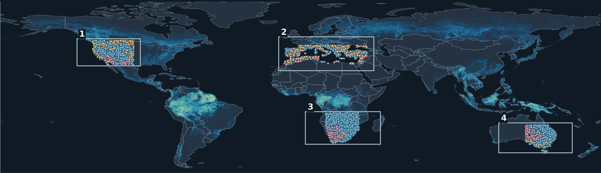

CLIMATE EXTREMES / ECOLOGICAL MEMORY
What the first extreme
leaves behind.
The second climate extreme encounters a landscape already changed by the first. We follow that history through satellite observations, soil-water measurements and historical fire records.

CI18 / REGIONAL ZOOM
Map legend and scope
Dots denote sampling strata, not fire risk: Forest Shrubland Savanna / grassland Cropland. The background is woody above-ground biomass, not a fire-risk surface.
THE STUDY CLOCK
One study.
Different evidence years.
The canopy tells only
part of the story.
Explore matching satellite views, then see how the vegetation and water-use indicators differed between stress sequences.
Show all 18 archived views
CI442 / BETWEEN-STRESS CHANGE
Canopy signals rose.
Relative water use fell.
Heat-first minus low-soil-water-first, in the units of each indicator.
Pointwise 95% intervals; product samples differ. The 1,331-episode ET/PET–FPAR–LAI overlap is a pre-adjustment coverage count, not a common-sample fit.
Fire risk changed sign
across memory groups.
In the historical analysis, heat-first histories had lower estimated risk in the two lower physiological-memory quartiles and higher risk in the two upper quartiles.
Read the data
When does history
improve a prediction?
Two models developed for this study, two targets. Compare archived predictions rather than running a new fit.
20-cm soil water · 49 matched days · 14 July–31 August 2022
How the rainfall memory works · 90 days before 31 August 2022
Same archived rainfall input. Lines show exp(−lag/τ) for τ = 1 and 30 days; prediction-day rain is excluded.
Watch the group fits, the four-region comparison and individual classification in sequence.